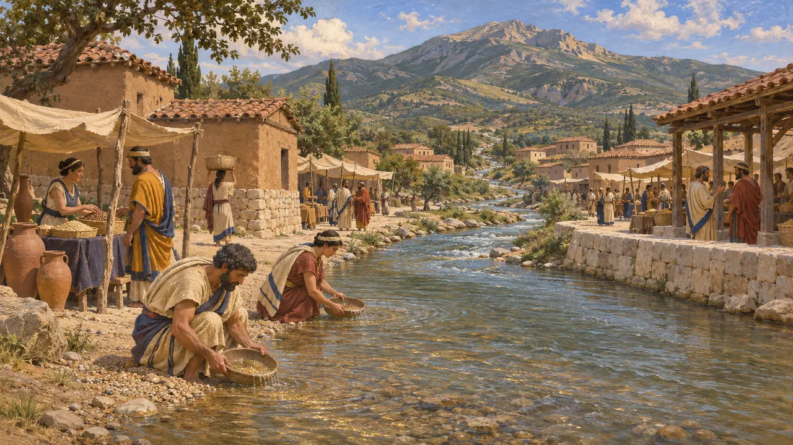
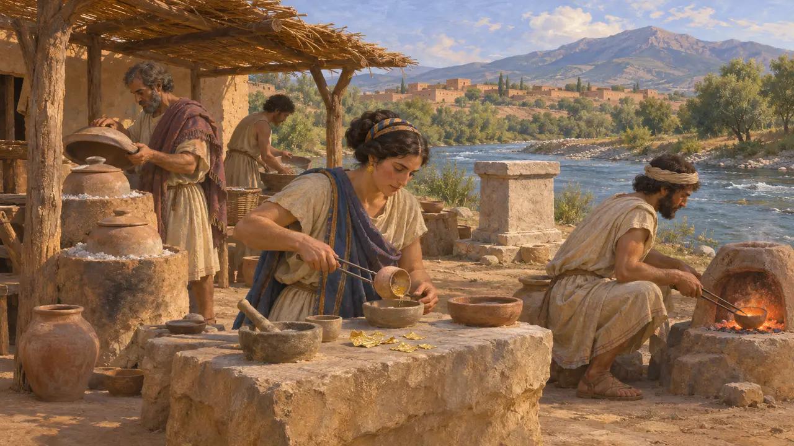
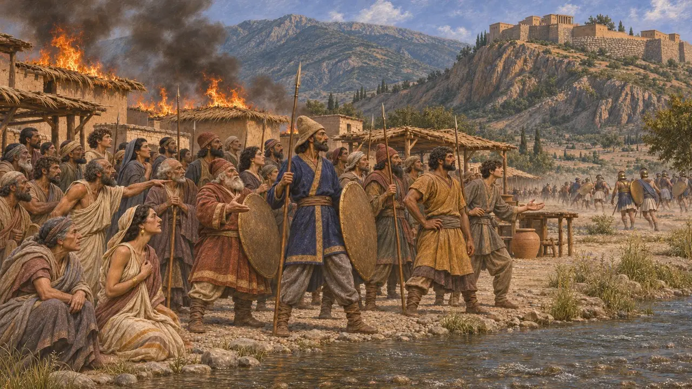
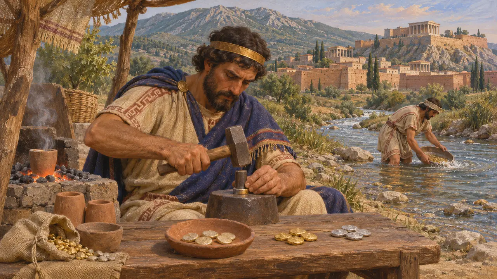
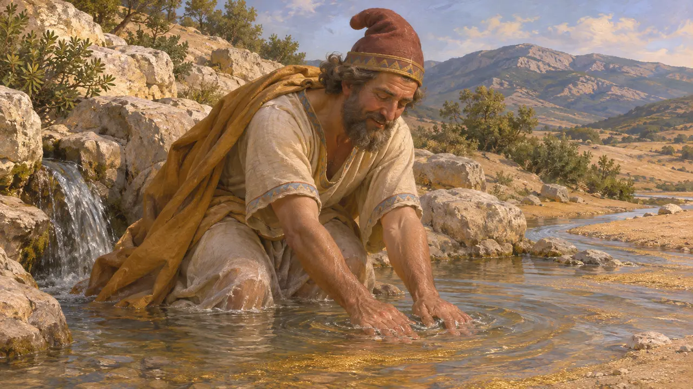

팍톨로스강은 트몰로스산에서 북쪽으로 흘러 사르디스 유적지를 지나 헤르모스강으로 들어가는 작은 강입니다. 고대에는 금과 은의 천연 합금인 호박금 조각이 이 강에 실려 내려왔고, 리디아의 왕들은 강가에서 이 금속을 정련했습니다. 이 강의 금은 크로이소스의 부를 가리키는 대명사가 되었으며, 페르시아의 지배 아래에서도 사르디스는 아나톨리아 서부에서 왕권의 중심지로 남았습니다.
게임에서: 사르디스 단계(498년)에서 팍톨로스는 사금이 나는 강으로, 그 곁에 팍톨로스 금 정련소가 서 있다. 발굴된 정련소는 리디아 왕들의 시대에 속하며, 페르시아 치하에서도 여전히 가동되었다는 뚜렷한 증거는 없으므로 게임에서는 그 가동 시기를 연장했다.

트몰로스 산에서 흘러내리는 강
고대의 전승헤로도토스는 리디아에는 트몰로스에서 씻겨 내려오는 사금 말고는 기록할 만한 경이가 별로 없다고 말한다. 그는 팍톨로스강이 이 금을 싣고 사르디스의 아고라 한가운데를 지나 헤르모스강에 합류하며, 헤르모스강은 바다로 흘러간다고 묘사한다. 몇 세기 뒤의 스트라본은 이 강이 한때 크로이소스의 부를 대주었으나 자신의 시대에는 금이 바닥났다고 적었다.
Herodotus 1.93; Herodotus 5.101; Strabo 13.4

강변의 정련소
당대 기록사르디스 발굴단은 강 동쪽 기슭, 팍톨로스 북구역이라 불리는 곳에서 페르시아 정복 이전인 기원전 6세기의 금 정련소를 발견했다. 일꾼들은 회취법으로 납과 비금속을 제거한 뒤, 금을 소금과 함께 가열해 은을 빼냈는데, 이를 시멘테이션이라 한다. 도가니와 화로, 금박 조각이 남아 있으며 가까이에는 제단도 있다. 이는 기록이 잘 남은 금 분리 공방 가운데 알려진 가장 이른 곳이다.
A. Ramage and P. Craddock, King Croesus' Gold, 2000

기원전 498년 강가의 아고라
고대의 전승헤로도토스에 따르면 기원전 498년 이오니아 반란군은 아테네와 에레트리아 동맹군과 함께 사르디스로 진군했다. 한 병사가 어느 집에 불을 지르자, 대부분의 집이 갈대로 지어졌거나 갈대 지붕을 얹었던 탓에 불길이 아랫도시 전체로 번졌다. 불에 갇힌 리디아인과 페르시아인은 팍톨로스강 옆 아고라에 모여 맞서 싸웠고, 공격자들은 해안으로 물러났다. 사트라프 아르타프레네스는 그동안 내내 성채를 지켰다.
Herodotus 5.100-102

호박금, 크로이소스, 그리고 최초의 주화
분쟁 중리디아는 아마도 기원전 7세기 후반에, 아마도 강에서 얻은 금속으로 가장 이른 시기의 호박금 주화 몇 가지를 주조했다. 헤로도토스는 리디아인이 금화와 은화를 처음 주조한 사람들이라고 말하며, 현대 학자들은 이 순금속 주화를 크로이세이드라 부른다. 일부 역사가들은 기원전 547년경 사르디스를 점령한 페르시아인이 이를 처음 주조했다고 주장했다. 그 약탈 당시의 파괴층에서 발견된 주화를 근거로 케이힐과 크롤은 이 주화가 크로이소스 치세에 시작되었다고 주장했지만, 논쟁은 계속되고 있다.
Herodotus 1.94; N. Cahill and J. H. Kroll, New Archaic Coin Finds at Sardis, 2005

미다스가 자신의 선물을 씻어 내다
후대의 전설후대의 그리스와 로마 작가들은 이 강의 금을 미다스 이야기로 설명했다. 미다스는 손대는 것마다 금으로 변하게 한 프리기아의 왕이었다. 오비디우스에 따르면 바쿠스 신이 그를 팍톨로스강의 수원으로 보내 몸을 씻게 했고, 그 저주가 강물과 모래로 옮겨 갔다고 한다. 이 이야기는 크로이소스보다 5세기 넘게 지난 뒤에 기록된 것으로, 역사가 아니라 신화이다.
Ovid, Metamorphoses 11
출처
- Herodotus, Histories 1.93-94, 5.100-102
- A. Ramage and P. Craddock, King Croesus' Gold: Excavations at Sardis and the History of Gold Refining, 2000
- N. Cahill and J. H. Kroll, New Archaic Coin Finds at Sardis, 2005
- Strabo, Geography 13.4
- P. Briant, From Cyrus to Alexander, 2002
- Ovid, Metamorphoses 11